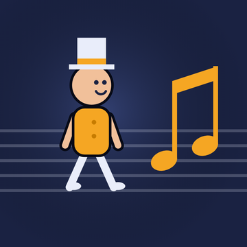

Mansfield Games
Note Walker
Read the rhythm, tap each note, and keep the walker on their feet. Note Walker is now an app for iPhone and iPad.
Get it on the App Store
Mansfield Games
Read the rhythm, tap each note, and keep the walker on their feet. Note Walker is now an app for iPhone and iPad.
Get it on the App Store